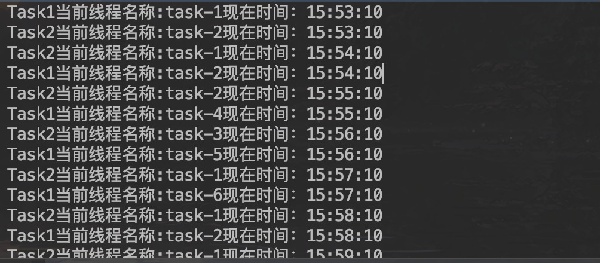

1.15.1.1. springboot中配置定时任务(Cron表达式)线程池方式
项目地址:https://github.com/heng1234/springboot2.x/tree/master/boot_task
Quartz Cron表达式:https://blog.csdn.net/qq_39313596/article/details/90438580
Quartz Cron表达式在线生成地址:http://cron.qqe2.com/
开始使用:
首先在启动类加上@EnableScheduling开启定时任务
import org.springframework.boot.SpringApplication;
import org.springframework.boot.autoconfigure.SpringBootApplication;
import org.springframework.scheduling.annotation.EnableScheduling;
//开启定时任务
@EnableScheduling
@SpringBootApplication
public class BootTaskApplication {
public static void main(String[] args) {
SpringApplication.run(BootTaskApplication.class, args);
}
}
接着配置线程池
import org.springframework.context.annotation.Bean;
import org.springframework.context.annotation.Configuration;
import org.springframework.scheduling.annotation.SchedulingConfigurer;
import org.springframework.scheduling.concurrent.ThreadPoolTaskScheduler;
import org.springframework.scheduling.config.ScheduledTaskRegistrar;
/**
* spring boot 多线程并发定时任务
* 所有的任务都在同一个线程池但不同线程中完成
* @author : kaifa
* create at: 2019-11-08 15:24
* @description: 定时任务线程池
*/
@Configuration
public class SchedulingConfig implements SchedulingConfigurer {
@Override
public void configureTasks(ScheduledTaskRegistrar taskRegistrar) {
taskRegistrar.setScheduler(taskScheduler());
}
/**
* 定时任务使用的线程池
* 使用@Bean注解，在不配置destroyMethod时，其默认值为：
*
* String destroyMethod() default AbstractBeanDefinition.INFER_METHOD;
*
*
* public static final String INFER_METHOD = "(inferred)";
* 也就是在不配置destroyMethod时，spring会使用推断的销毁方法，这种推断的方法要求满足：
*
* 1. public的
* 2. 无参数
* 3. 方法名为close或shutdown
*
* 如果当一个bean正好有上面的方法，那么就会在销毁时调用。比如redis.clients.jedis.BinaryJedis 及子类就满足要求，
* 有一个shutdown方法。但是他的shutdown方法是向redis-server发送shutdown命令，并不是销毁连接。
* 因此在这个Bean销毁时，其实是不希望调用该shutdown方法的。
* 如果想防止调用推断的销毁方法，需要给destroyMethod赋值为""：
*
* @Bean(destroyMethod = "")
*该方法会检查销毁的方法（requiresDestruction里），并且注册DisposableBeanAdapter，DisposableBeanAdapter会最终调用bean的destroyMethod。
*
*
* protected void registerDisposableBeanIfNecessary(String beanName, Object bean, RootBeanDefinition mbd) {
* AccessControlContext acc = (System.getSecurityManager() != null ? getAccessControlContext() : null);
* if (!mbd.isPrototype() && requiresDestruction(bean, mbd)) {
* if (mbd.isSingleton()) {
* // Register a DisposableBean implementation that performs all destruction
* // work for the given bean: DestructionAwareBeanPostProcessors,
* // DisposableBean interface, custom destroy method.
* registerDisposableBean(beanName,
* new DisposableBeanAdapter(bean, beanName, mbd, getBeanPostProcessors(), acc));
* }
* else {
* // A bean with a custom scope...
* Scope scope = this.scopes.get(mbd.getScope());
* if (scope == null) {
* throw new IllegalStateException("No Scope registered for scope name '" + mbd.getScope() + "'");
* }
* scope.registerDestructionCallback(beanName,
* new DisposableBeanAdapter(bean, beanName, mbd, getBeanPostProcessors(), acc));
* }
* }
* }
* @return
*/
@Bean(destroyMethod = "shutdown", name = "taskScheduler")
public ThreadPoolTaskScheduler taskScheduler(){
ThreadPoolTaskScheduler scheduler = new ThreadPoolTaskScheduler();
scheduler.setPoolSize(10);//线程数量
scheduler.setThreadNamePrefix("task-");//线程名前缀
scheduler.setAwaitTerminationSeconds(600);//waitForTasksToCompleteOnShutdown的等待的时长，默认值为0，即不等待。
scheduler.setWaitForTasksToCompleteOnShutdown(true);//是否等待所有线程执行完毕才关闭线程池，默认值为false。
return scheduler;
}
}
使用定时任务:
import org.springframework.scheduling.annotation.Scheduled;
import org.springframework.stereotype.Component;
import java.text.SimpleDateFormat;
import java.util.Date;
/**
* @author : kaifa
* create at: 2019-11-08 14:26
* @description: 定时任务
*/
@Component
public class TaskTest {
// 定义每过10秒执行任务
// @Scheduled(fixedRate = 10000)
@Scheduled(cron = "10 * * * * ?")
public void Task1() {
SimpleDateFormat dateFormat = new SimpleDateFormat("HH:mm:ss");
System.out.println("Task1当前线程名称:"+Thread.currentThread().getName()+"现在时间：" + dateFormat.format(new Date()));
}
// 定义每过10秒执行任务
@Scheduled(cron = "10 * * * * ?")
public void Task2() {
SimpleDateFormat dateFormat = new SimpleDateFormat("HH:mm:ss");
System.out.println("Task2当前线程名称:"+Thread.currentThread().getName() +"现在时间："+ dateFormat.format(new Date()));
}
}
运行项目控制台打印:

下一章:springboot发送邮箱